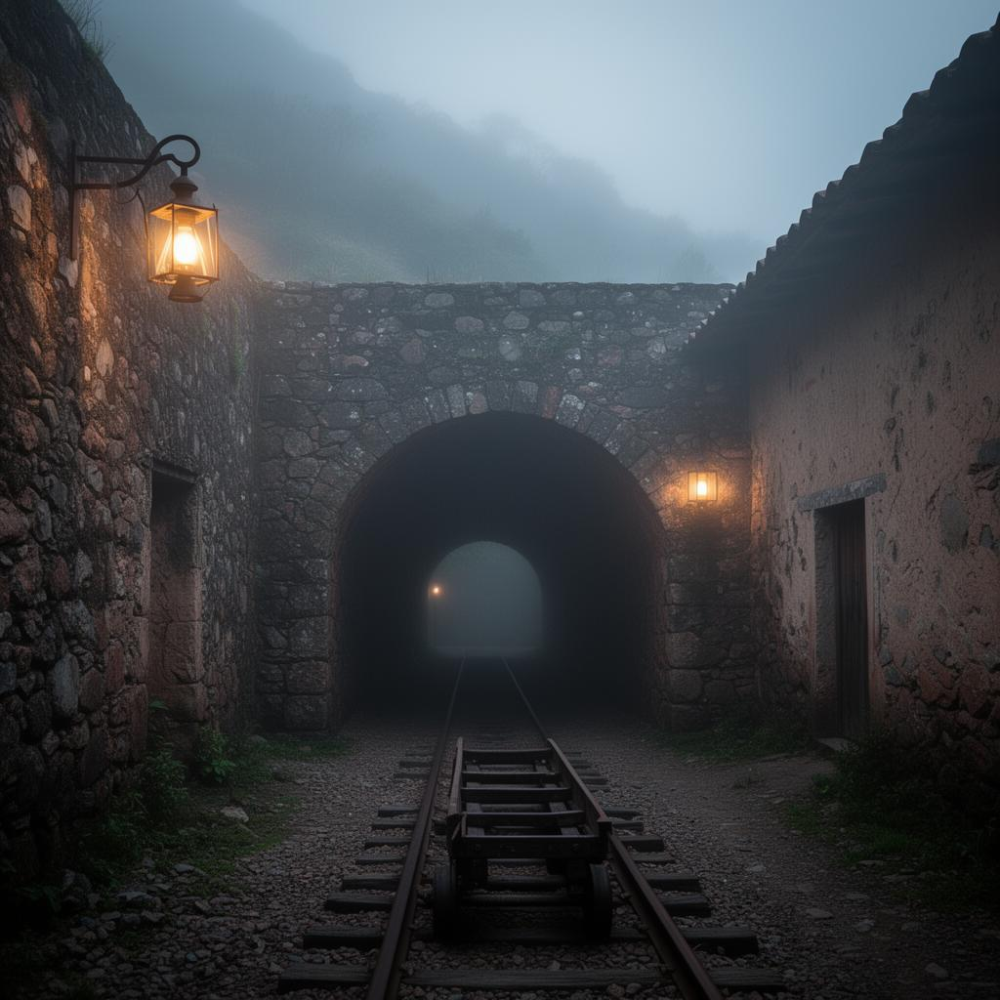
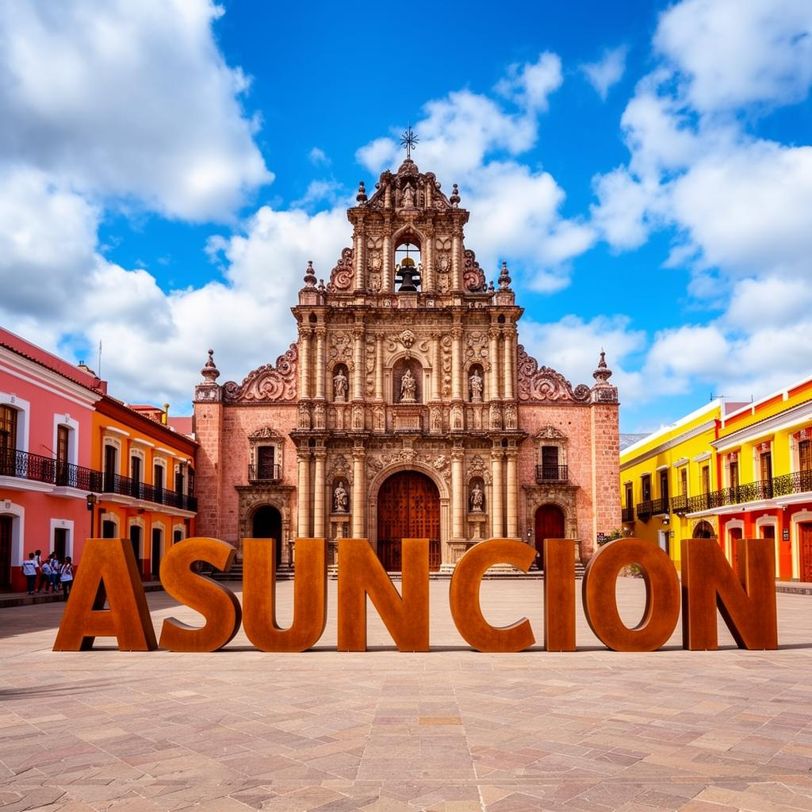
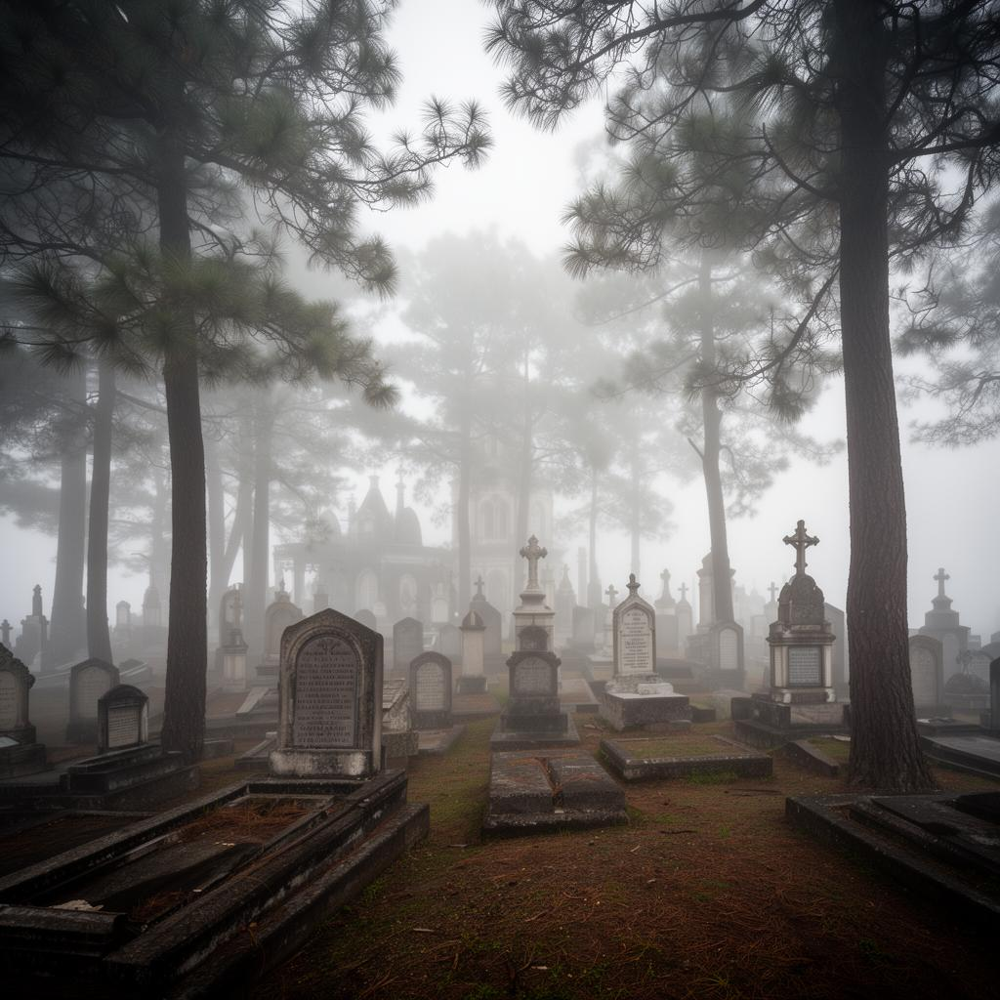
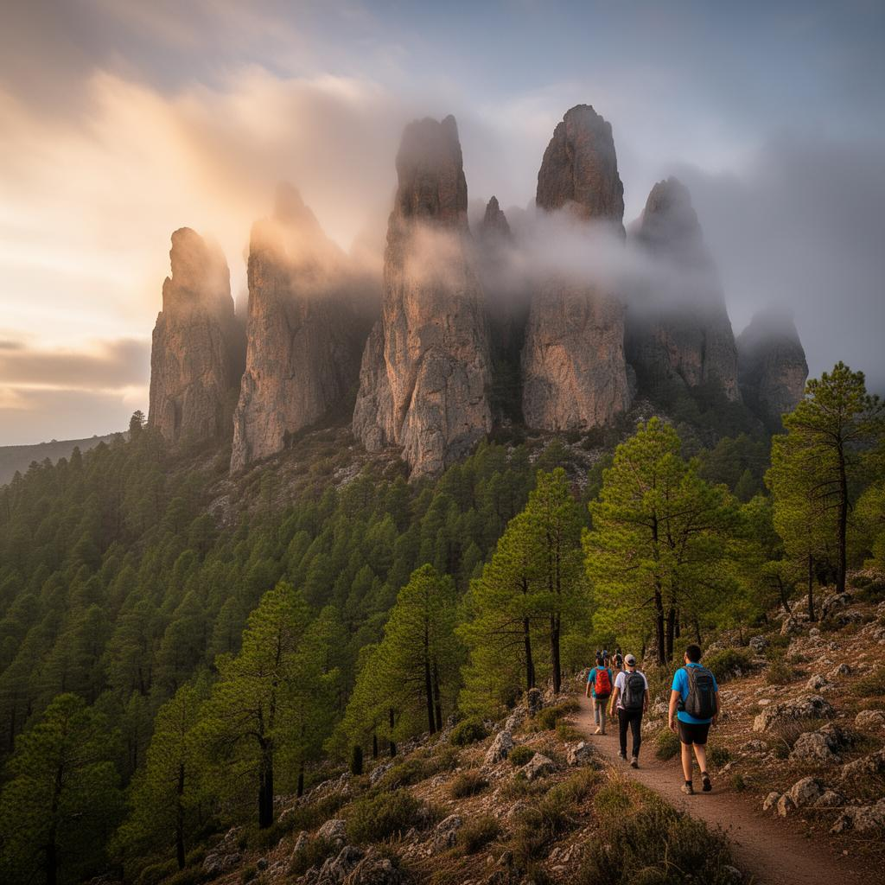
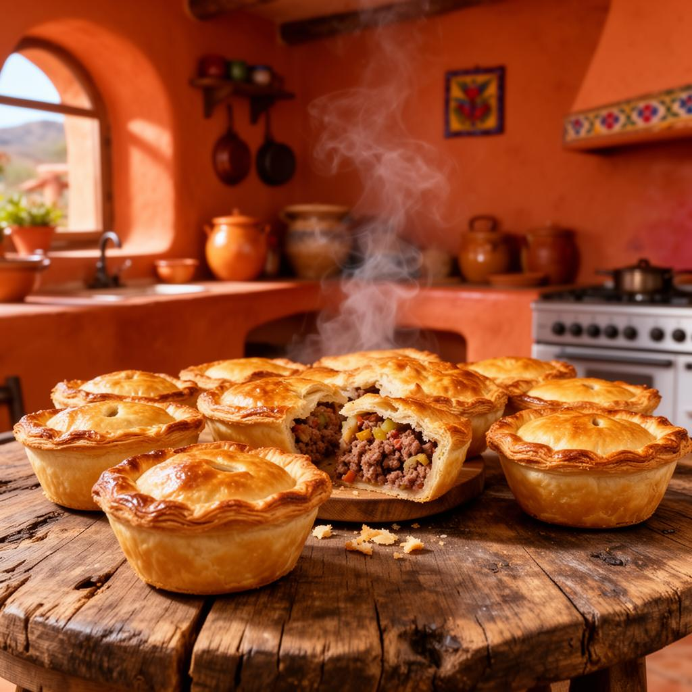

Pasaporte del visitante
0 / 5 sellos
Escanea para abrir tu pasaporte
Pueblo Mágico · Sierra de Hidalgo · 2 700 m s. n. m.
El corazón minero de Hidalgo, donde la herencia cornish se encuentra con la sierra alta. Explora su patrimonio, su gastronomía y su naturaleza con una guía viva del destino.
Qué visitar
Patrimonio industrial, memoria cultural, naturaleza de altura y la gastronomía que dio identidad al pueblo.

Museo de sitio en la histórica bocamina; malacates, socavones y la memoria del trabajo minero.

La Parroquia de la Asunción y las calles empedradas con arquitectura de influencia inglesa.

El único cementerio británico de México; lápidas orientadas a Inglaterra sobre la sierra.

Formaciones rocosas y bosque de altura; senderismo, escalada y miradores entre la niebla.

La empanada cornish que se volvió mexicana; museo del paste y decenas de pastelerías locales.
Cartografía viva
Puntos de interés por categoría. Filtra el territorio según lo que quieras vivir hoy.
Ubicaciones referenciales sobre cartografía abierta (OpenStreetMap). Verifica horarios de cada sitio antes de tu visita.
Vive el destino
Colecciona tus visitas, escucha la historia de cada sitio y llévate un recuerdo del recorrido.
Los orígenes mineros de Real del Monte y la huelga de 1766, la primera de América.
De los mineros de Cornualles a las pastelerías de hoy: una ruta de sabor e historia.
Economía local
Prestadores locales verificados. Contáctalos directo o traza tu ruta con un toque.
Directorio de demostración. En producción se sincroniza con el padrón comunal de prestadores acreditados.
Planea tu visita
Información turística, colaboraciones institucionales y gobernanza comunal del destino.